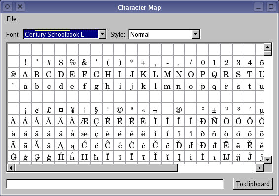

| Home · All Classes · Main Classes · Grouped Classes · Modules · Functions |
Files:
The Character Map example shows how to create a custom widget that can both display its own content and respond to user input.
The example displays an array of characters which the user can click on to enter text in a line edit. The contents of the line edit can then be copied into the clipboard, and pasted into other applications. The purpose behind this sort of tool is to allow users to enter characters that may be unavailable or difficult to locate on their keyboards.

The example consists of the following classes:
The CharacterWidget class is used to display an array of characters in a user-specified font and style. For flexibility, we subclass QWidget and reimplement only the functions that we need to provide basic rendering and interaction features.
The class definition looks like this:
class CharacterWidget : public QWidget
{
Q_OBJECT
public:
CharacterWidget(QWidget *parent = 0);
QSize sizeHint() const;
public slots:
void updateFont(const QString &fontFamily);
void updateStyle(const QString &fontStyle);
signals:
void characterSelected(const QString &character);
protected:
void mouseMoveEvent(QMouseEvent *event);
void mousePressEvent(QMouseEvent *event);
void paintEvent(QPaintEvent *event);
private:
QFont displayFont;
int lastKey;
};
The widget does not contain any other widgets, so it must provide its own size hint to allow its contents to be displayed correctly. We reimplement QWidget::paintEvent() to draw custom content. We also reimplement QWidget::mousePressEvent() to allow the user to interact with the widget.
The updateFont() and updateStyle() slots are used to update the font and style of the characters in the widget whenever the user changes the settings in the application. The class defines the characterSelected() signal so that other parts of the application are informed whenever the user selects a character in the widget. As a courtesy, the widget provides a tooltip that shows the current character value. We reimplement the QWidget::mouseMoveEvent() event handler and define showToolTip() to enable this feature.
The displayFont and currentKey private data members are used to record the current font and the currently highlighted character in the widget.
Since the widget is to be used as a simple canvas, the constructor just calls the base class constructor and defines some default values for private data members.
CharacterWidget::CharacterWidget(QWidget *parent)
: QWidget(parent)
{
lastKey = -1;
setMouseTracking(true);
}
We initialize currentKey with a value of -1 to indicate that no character is initially selected. We enable mouse tracking to allow us to follow the movement of the cursor across the widget.
The class provides two functions to allow the font and style to be set up. Each of these modify the widget's display font and call update():
void CharacterWidget::updateFont(const QString &fontFamily)
{
displayFont.setFamily(fontFamily);
displayFont.setPixelSize(16);
update();
}
void CharacterWidget::updateStyle(const QString &fontStyle)
{
QFontDatabase fontDatabase;
displayFont = fontDatabase.font(displayFont.family(), fontStyle, 12);
displayFont.setPixelSize(16);
update();
}
We use a fixed size font for the display. Similarly, a fixed size hint is provided by the sizeHint() function:
QSize CharacterWidget::sizeHint() const
{
return QSize(32*24, (65536/32)*24);
}
Three standard event functions are implemented so that the widget can respond to clicks, provide tooltips, and render the available characters. The paintEvent() shows how the contents of the widget are arranged and displayed:
void CharacterWidget::paintEvent(QPaintEvent *event)
{
QPainter painter(this);
painter.fillRect(event->rect(), QBrush(Qt::white));
painter.setFont(displayFont);
A QPainter is created for the widget and, in all cases, we ensure that the widget's background is painted. The painter's font is set to the user-specified display font.
The area of the widget that needs to be redrawn is used to determine which characters need to be displayed:
QRect redrawRect = event->rect();
int beginRow = redrawRect.top()/24;
int endRow = redrawRect.bottom()/24;
int beginColumn = redrawRect.left()/24;
int endColumn = redrawRect.right()/24;
Using integer division, we obtain the row and column numbers of each characters that should be displayed, and we draw a square on the widget for each character displayed.
painter.setPen(QPen(Qt::gray));
for (int row = beginRow; row <= endRow; ++row) {
for (int column = beginColumn; column <= endColumn; ++column) {
painter.drawRect(column*24, row*24, 24, 24);
}
}
The symbols for each character in the array are drawn within each square, with the symbol for the most recently selected character displayed in red:
QFontMetrics fontMetrics(displayFont);
painter.setPen(QPen(Qt::black));
for (int row = beginRow; row <= endRow; ++row) {
for (int column = beginColumn; column <= endColumn; ++column) {
int key = row*32 + column;
painter.setClipRect(column*24, row*24, 24, 24);
if (key == lastKey)
painter.fillRect(column*24, row*24, 24, 24, QBrush(Qt::red));
painter.drawText(column*24 + 12 - fontMetrics.width(QChar(key))/2,
row*24 + 4 + fontMetrics.ascent(),
QString(QChar(key)));
}
}
}
We do not need to take into account the difference between the area displayed in the viewport and the area we are drawing on because everything outside the visible area will be clipped.
The mousePressEvent() defines how the widget responds to mouse clicks.
void CharacterWidget::mousePressEvent(QMouseEvent *event)
{
if (event->button() == Qt::LeftButton) {
lastKey = (event->y()/24)*32 + event->x()/24;
if (QChar(lastKey).category() != QChar::NoCategory)
emit characterSelected(QString(QChar(lastKey)));
update();
}
else
QWidget::mousePressEvent(event);
}
We are only interested when the user clicks with the left mouse button over the widget. When this happens, we calculate which character was selected and emit the characterSelected() signal. The character's number is found by dividing the x and y-coordinates of the click by the size of each character's grid square. Since there are 32 of these to a row, we simply multiply the row index by 32 and add the column number to obtain the character number.
If any other mouse button is pressed, the event is passed on to the QWidget base class. This ensures that the event can be handled properly by any other interested widgets.
The mouseMoveEvent() maps the mouse cursor's position in global coordinates to widget coordinates, and determines the character that was clicked by performing the calculation
void CharacterWidget::mouseMoveEvent(QMouseEvent *event)
{
QPoint widgetPosition = mapFromGlobal(event->globalPos());
int key = (widgetPosition.y()/24)*32 + widgetPosition.x()/24;
QToolTip::showText(event->globalPos(), QString::number(key), this);
}
The tooltip is given a position defined in global coordinates.
The MainWindow class provides a minimal user interface for the example, with only a constructor, slots that respond to signals emitted by standard widgets, and some convenience functions that are used to set up the user interface.
The class definition looks like this:
class MainWindow : public QMainWindow
{
Q_OBJECT
public:
MainWindow();
public slots:
void findStyles();
void insertCharacter(const QString &character);
void updateClipboard();
private:
void findFonts();
CharacterWidget *characterWidget;
QClipboard *clipboard;
QComboBox *fontCombo;
QComboBox *styleCombo;
QLineEdit *lineEdit;
QScrollArea *scrollArea;
};
The main window contains various widgets that are used to control how the characters will be displayed, and defines the findFonts() function for clarity and convenience. The findStyles() slot is used by the widgets to determine the styles that are available, insertCharacter() inserts a user-selected character into the window's line edit, and updateClipboard() synchronizes the clipboard with the contents of the line edit.
In the constructor, we set up the window's central widget and fill it with some standard widgets (two comboboxes, a line edit, and a push button). We also construct a CharacterWidget custom widget, and add a QScrollArea so that we can view its contents:
MainWindow::MainWindow()
{
QWidget *centralWidget = new QWidget;
QLabel *fontLabel = new QLabel(tr("Font:"));
fontCombo = new QComboBox;
QLabel *styleLabel = new QLabel(tr("Style:"));
styleCombo = new QComboBox;
scrollArea = new QScrollArea;
characterWidget = new CharacterWidget;
scrollArea->setWidget(characterWidget);
QScrollArea provides a viewport onto the CharacterWidget when we set its widget and handles much of the work needed to provide a scrolling viewport.
We list the available fonts and styles in the comboboxes using the following functions:
findFonts();
findStyles();
The line edit and push button are used to supply text to the clipboard:
lineEdit = new QLineEdit;
QPushButton *clipboardButton = new QPushButton(tr("&To clipboard"));
We also obtain a clipboard object so that we can send text entered by the user to other applications.
Most of the signals emitted in the example come from standard widgets. We connect these signals to slots in this class, and to the slots provided by other widgets.
connect(fontCombo, SIGNAL(currentIndexChanged(const QString &)),
this, SLOT(findStyles()));
connect(fontCombo, SIGNAL(currentIndexChanged(const QString &)),
characterWidget, SLOT(updateFont(const QString &)));
connect(styleCombo, SIGNAL(currentIndexChanged(const QString &)),
characterWidget, SLOT(updateStyle(const QString &)));
The font combobox's activated() signal is connected to the findStyles() function so that the list of available styles can be shown for each font that is used. Since both the font and the style can be changed by the user, the activated() signals from both the font and style comboboxes are connected directly to the character widget:
connect(characterWidget, SIGNAL(characterSelected(const QString &)),
this, SLOT(insertCharacter(const QString &)));
connect(clipboardButton, SIGNAL(clicked()), this, SLOT(updateClipboard()));
The final two connections allow characters to be selected in the character widget, and text to be inserted into the clipboard. The character widget emits the characterSelected() custom signal when the user clicks on a character, and this is handled by the insertCharacter() function in this class. The clipboard is changed when the push button emits the clicked() signal, and we handle this with the updateClipboard() function.
The remaining code in the constructor sets up the layout of the central widget, and provides a window title:
QHBoxLayout *controlsLayout = new QHBoxLayout;
controlsLayout->addWidget(fontLabel);
controlsLayout->addWidget(fontCombo, 1);
controlsLayout->addWidget(styleLabel);
controlsLayout->addWidget(styleCombo, 1);
controlsLayout->addStretch(1);
QHBoxLayout *lineLayout = new QHBoxLayout;
lineLayout->addWidget(lineEdit, 1);
lineLayout->addSpacing(12);
lineLayout->addWidget(clipboardButton);
QVBoxLayout *centralLayout = new QVBoxLayout;
centralLayout->addLayout(controlsLayout);
centralLayout->addWidget(scrollArea, 1);
centralLayout->addSpacing(4);
centralLayout->addLayout(lineLayout);
centralWidget->setLayout(centralLayout);
setCentralWidget(centralWidget);
setWindowTitle(tr("Character Map"));
}
We implement two functions to set up the fonts because the display font family and style can be set independently. findFonts() uses a font database to provide items in the font combobox:
void MainWindow::findFonts()
{
QFontDatabase fontDatabase;
fontCombo->clear();
QString family;
foreach (family, fontDatabase.families())
fontCombo->addItem(family);
}
In this function, we clear the combobox, but only add entries for the available font families. The styles that can be used with each font are found by the findStyles() function. This function is called whenever the user selects a different font in the font combobox.
void MainWindow::findStyles()
{
QFontDatabase fontDatabase;
QString currentItem = styleCombo->currentText();
styleCombo->clear();
We begin by recording the currently selected style, and we clear the style combobox so that we can insert the styles associated with the current font family.
QString style;
foreach (style, fontDatabase.styles(fontCombo->currentText()))
styleCombo->addItem(style);
int styleIndex = styleCombo->findText(currentItem);
if (styleIndex == -1)
styleCombo->setCurrentIndex(0);
else
styleCombo->setCurrentIndex(styleIndex);
}
We use the font database to collect the styles that are available for the current font, and insert them into the style combobox. The current item is reset if the original style is not available for this font.
The last two functions are slots that respond to signals from the character widget and the main window's push button. The insertCharacter() function is used to insert characters from the character widget when the user clicks a character:
void MainWindow::insertCharacter(const QString &character)
{
lineEdit->insert(character);
}
The character is inserted into the line edit at the current cursor position.
The main window's "To clipboard" push button is connected to the updateClipboard() function so that, when it is clicked, the clipboard is updated to contain the contents of the line edit:
void MainWindow::updateClipboard()
{
clipboard->setText(lineEdit->text(), QClipboard::Clipboard);
clipboard->setText(lineEdit->text(), QClipboard::Selection);
}
We copy all the text from the line edit to the clipboard, but we do not clear the line edit.
| Copyright © 2006 Trolltech | Trademarks | Qt 4.1.1 |